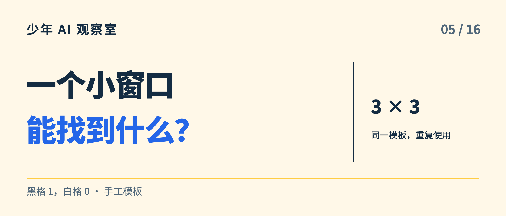
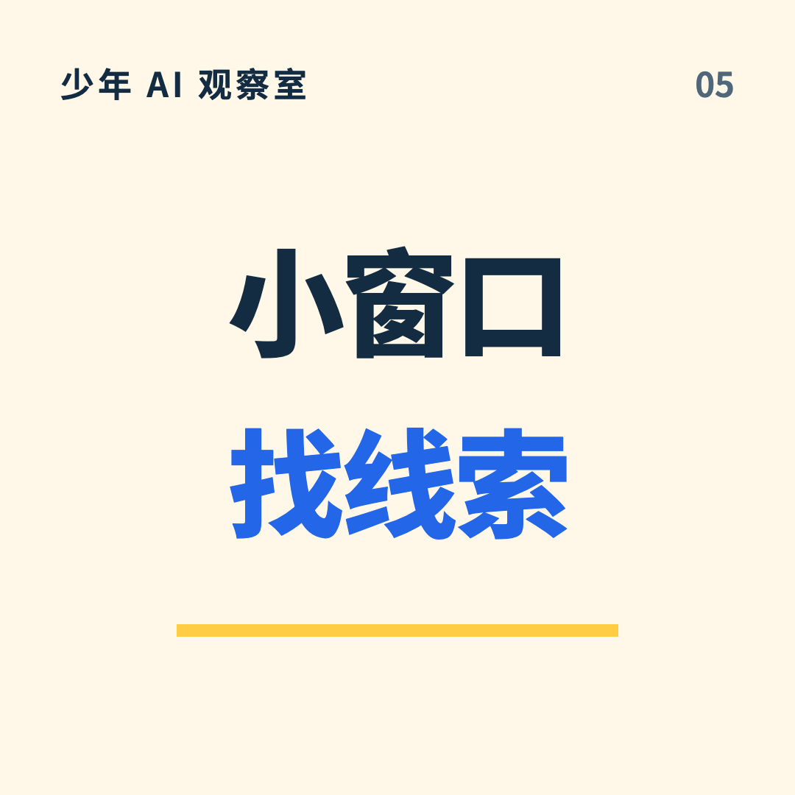

<!doctype html><html lang="zh-CN"><meta charset="utf-8"><meta name="viewport" content="width=device-width, initial-scale=1"><title>第 05 期配套封面</title><style>body{background:#fff8e8;color:#142c42;font-family:sans-serif;margin:24px}main{max-width:1000px;margin:auto}img{display:block;max-width:100%;height:auto}.sq{width:360px}a{color:#2466e8}p{line-height:1.8}</style><main><a href="公众号图文预览.html">返回本期</a><p>配套封面 · 审阅稿</p><h2>主封面 21:9</h2><h2>分享封面 1:1</h2></main></html>